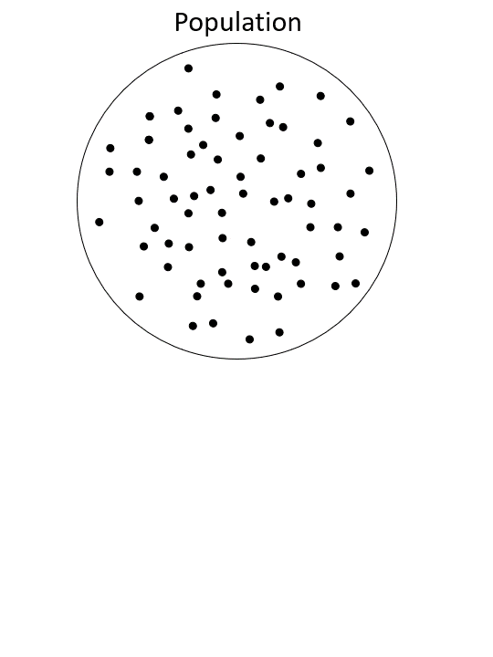
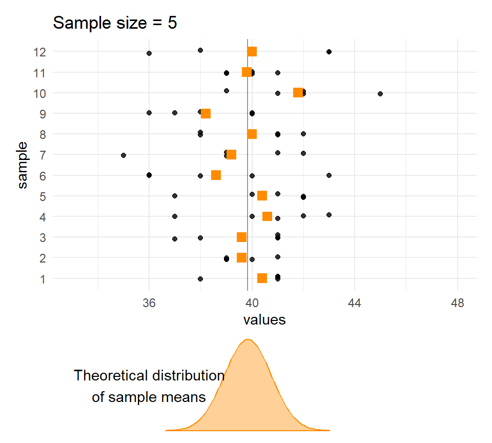
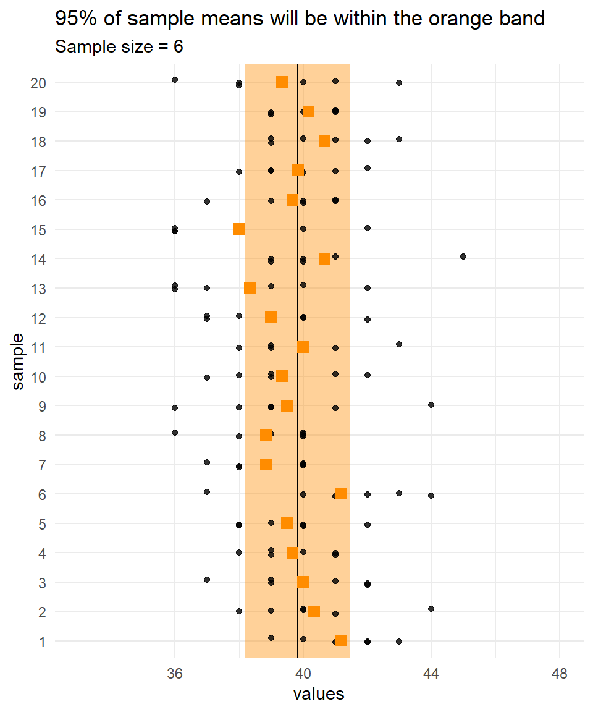
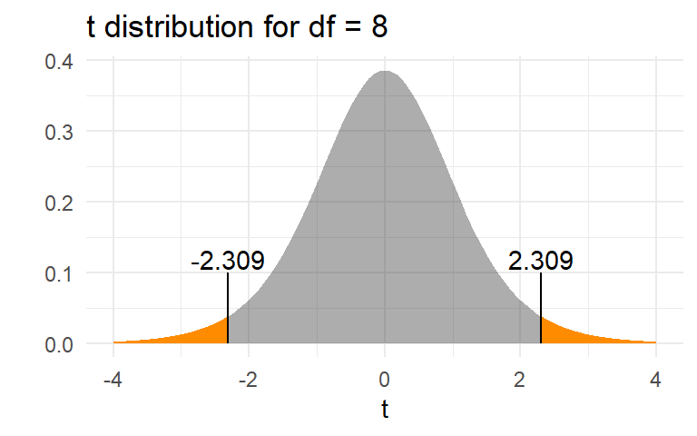
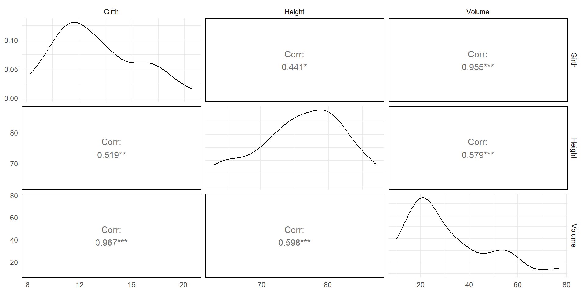

“A statistical analysis, properly conducted, is a delicate dissection of uncertainties, a surgery of suppositions.”
— M.J. Moroney
Statistical Inference
The term statistical inference means that we are using properties of a sample to make statements about the population from which the sample was drawn.
For example, say you wanted to know the mean length of the leaves on a tree (\(\mu\)). You wouldn’t want to (nor need to) measure every single leaf! You would take a random sample of leaves and measure their lengths (\(x_i\)), calculate the sample mean (\(\bar x\)), and use \(\bar x\) as an estimate of \(\mu\).

Statistical Inference
Whenever we use sample data to make statements about a population (i.e., do inference):
The sample mean \(\bar x\) is a single draw from a random variable \(\bar X\). It will never be exactly equal to \(\mu\) unless you measure every single leaf.
Each sample yields a different \(\bar x\). This is called sampling error.
Therefore, there is uncertainty in our estimate of \(\mu\).
The variability of the sample means from sample to sample, \(\text{Var}(\bar X)\), depends on two things: the variability of the population values, \(\text{Var}(x)\), and the size of the sample, \(n\).
The variability of the sample estimate of a parameter is usually expressed as a standard error, which is simply the theoretical standard deviation of \(\bar X\) from sample to sample.
Sampling Variation
Quetelet’s dataset
In 1846, a Belgian scholar Adolphe Quetelet published an analysis of the chest sizes of a full population of 5,738 Scottish soldiers.
The distribution of the measurements (in inches) in his database has a mean of \(\mu\) = 39.83 inches, a standard deviation of \(\sigma\) = 2.05 inches, and is well approximated by a normal distribution.
Every soldier was measured so we can treat this as the population, and \(\mu\) = 39.83 and \(\sigma\) = 2.05 as population parameters. Let’s take some samples of size \(n\) = 6 from this population.
# Convert to a long vector of valuesqd_long <-rep(qd$Chest, qd$Count)
Every soldier was measured so we can treat this as the population, and \(\mu\) = 39.83 and \(\sigma\) = 2.05 as population parameters. Let’s take some samples of size \(n\) = 6 from this population.
# Convert to a long vector of valuesqd_long <-rep(qd$Chest, qd$Count)
# Put ten samples in a tibbleq_samples <-tibble( sample =as_factor(1:10) ) |>mutate( values =map(sample, ~sample(qd_long, size =6)) ) |>unnest()head(q_samples, 15)
Every soldier was measured so we can treat this as the population, and \(\mu\) = 39.83 and \(\sigma\) = 2.05 as population parameters. Let’s take some samples of size \(n\) = 6 from this population.
# Convert to a long vector of valuesqd_long <-rep(qd$Chest, qd$Count)
# Put ten samples in a tibbleq_samples <-tibble( sample =as_factor(1:10) ) |>mutate( values =map(sample, ~sample(qd_long, size =6)) ) |>unnest()
# Calculate means of each samplesample_means <- q_samples |>group_by(sample) |>summarise(mean =mean(values))sample_means
The larger the \(n\), the less the sample means vary.
Standard error
If is distributed as a normal random variable with mean \(\mu\) and variance \(\sigma^2\),
\[X \sim \text{Normal}(\mu, \sigma)\]
then sample means of size \(n\) are distributed as
\[\bar X \sim \text{Normal}(\mu_\bar{X} = \mu, \sigma_\bar{X} = \sigma/\sqrt{n})\]\(\text{SE}(\bar{X}) = \sigma_\bar{X}= \sigma/\sqrt{n})\) is known as the standard error of the sample mean.
More generally, a standard error is the standard deviation of an estimated parameter over \(\infty\) theoretical samples.
According to the Central Limit Theorem (CLT), raw \(X\) values don’t have to be normally distributed for the sample means to be normally distributed (for any decent sample size)!
Quetelet’s chests: Standard error of means of samples
If Quetelet’s chest circumferences are distributed as \(X \sim \text{N}(\mu=39.83, \sigma=2.05)\), then how variable are the means of samples of size \(n\) = 6?
\[
\begin{aligned}
SE(\bar{X}_{n=6})&=\sigma/\sqrt{n} \\
&=2.05/\sqrt{6} \\
&=0.8369
\end{aligned}
\] Sample means of size \(n\) = 6 would be distributed as
Quetelet’s chests: Distribution of means of samples

Confidence intervals
Another common way of expressing uncertainty when making statistical inferences is to present:
a point estimate (e.g., the sample mean) and
a confidence interval around that estimate.
A confidence interval gives an indication of the sampling error.
A 95% confidence interval is constructed so that intervals from 95% of samples will contain the true population parameter.
In reality the interval either contains the true value or not, so you must not interpret a confidence interval as “there’s a 95% probability that the interval contains the true parameter”.
We can say:
“95% of so-constructed intervals will contain the true value of the parameter” or
“with 95% confidence, the interval contains the true value of the parameter”.
Confidence intervals
Because we know the population parameters for the Quetelet dataset, we can calculate were 95% of sample means will lie for any particular sample size.
Recall that, for a normal distribution, 95% of values lie between \(\mu \pm 1.96\times\sigma\)
(i.e., \(\mu - 1.96\times\sigma\) and \(\mu + 1.96\times\sigma\)).
It follows that 95% of means of samples of size \(n\) will lie within \(\mu \pm 1.96 \times \sigma/\sqrt{n}\).
For example, for samples of size 6 from the Quetelet dataset, 95% of means will lie within \(39.83 \pm 1.96\times 2.05 / \sqrt 6\),
so \(\{ 37.02 , 42.64\}\).

Estimating the distribution of sample means from data
It’s all very well deriving the distribution of sample means when we know the population parameters (\(\mu\) and \(\sigma\)) but in most cases we only have our one sample.
We don’t know any of the population parameters. We have to estimate the population mean (usually denoted \(\hat\mu\) or \(\bar x\)) and estimate of the population standard deviation (usually denoted \(\hat\sigma\) or \(s\)) from the sample data.
This additional uncertainty complicates things a bit. In fact, we can’t even use the normal distribution any more!
The t distribution
Introducing William Sealy Gosset, who described the t distribution after working with random numbers.
Gosset was a chemist and mathematician who worked for the Guinness brewery in Dublin.
Guinness forbade anyone from publishing under their own names so that competing breweries wouldn’t know what they were up to, so he published his discovery in 1908 under the penname “Student”. Student’s identity was only revealed when he died. It is therefore often called “Student’s t distribution”.
Willam Sealy Gosset 1876-1937
The t distribution
The t distribution is like the standard normal. It is bell-shaped and symmetric with mean = 0, but it has fatter tails (greater uncertainty) due to the fact that we do not know\(\sigma\); we have to estimate it.
The t distribution is not just a single distribution. It is really an entire series of distributions which is indexed by something called the “degrees of freedom” (or \(df\)).
As \(df \rightarrow \infty\), \(t \rightarrow Z\).
p <-expand_grid(df =c(2, 5, Inf),x =seq(-4, 4, by = .01) ) |>mutate(Density =dt(x = x, df = df),`degrees of freedom`=as_factor(df) ) |>ggplot() +aes(x = x, y = Density, group =`degrees of freedom`, colour =`degrees of freedom`) +geom_line()
The t distribution
For a sample of size \(n\), if
\(X\) is a normal random variable with mean \(\mu\),
\(\bar X\) is the sample mean, and
\(s\) is the sample standard deviation,
then the variable:
\[
T = \frac{\bar X - \mu} {s/\sqrt{n}}
\]
is distributed as a \(t\) distribution with \((n – 1)\) degrees of freedom.
Confidence intervals and the t distribution
The process of using sample data to try and make useful statements about an unknown parameter, \(\theta\), is called statistical inference.
A confidence interval for the true value of a parameter is often obtained by:
\[
\hat \theta \pm t \times \text{SE}(\hat \theta)
\] where \(\hat \theta\) is the sample estimate of \(\theta\).
The piece that is being added and subtracted, \(t \times \text{SE}(\hat \theta)\), is often called the margin of error.
Confidence intervals for a sample mean
We can calculate a 95% confidence interval for a sample mean with the following information:
sample mean \(\bar x\),
sample standard deviation \(s\),
the sample size \(n\), and
the 0.025th quantile of the \(t\) distribution with degrees of freedom \(df=n-1\).
One Sample t-test
data: dq1
t = 46.6, df = 5, p-value = 8.595e-08
alternative hypothesis: true mean is not equal to 0
95 percent confidence interval:
36.69118 40.97548
sample estimates:
mean of x
38.83333
Confidence intervals for sample means
t as a test statistic
This method can be used when the estimator \(\hat\theta\) is approximately normally distributed and
This paves the way for hypothesis testing for specific values of \(\theta\). Many of the methods you will learn in this course are based on this general rule.
Testing hypotheses
Testing hypotheses underpins a lot of scientific work.
A hypothesis is a proposition, a specific idea about the state of the world that can be tested with data.
For logical reasons, instead of measuring evidence for a hypothesis of interest, scientists will often:
specify a null hypotheses, a hypothesis that is true if our hypothesis of interest is false, and
measure the evidence against the null hypothesis, usually in the form of a p-value.
Example: growth of alfalfa
Say a farmer has 9 paddocks of alfalfa. He’s hired a new manager, and wants to know if, on average, this year’s crop is different to last year’s. He measures the yield for each paddock in year 1 and year 2, and calculates the difference.
The mean difference is 0.067. On average, yields were 0.067 greater than last year.
Is that convincing different from zero?
How likely is such a difference to have arisen just by chance, and really, if we had a million paddocks, there would be no difference?
What is the probability of seeing a difference of 0.067 or more in our dataset if the true mean were zero?
These questions can be addressed with a \(p\)-value from a hypothesis test.
Example: growth of alfalfa
The hypothesis of interest (called the “alternative” hypothesis) is:
\(\ \ \ \ \ H_A: \mu \ne 0\), that is, the mean difference in yield \(\mu\) between the two years is not zero.
The null hypothesis (the case if the alternative hypothesis is wrong) is:
\(\ \ \ \ \ H_0: \mu = 0\), that is, the mean difference is zero.
We can test the null hypothesis using a t statistic \(t_0 = \frac{\bar x - \mu_0} {text{SE}(\bar x)}\), where \(\ \ \ \ \ \mu_0 = 0\) is the hypothesised value of the mean and \(\ \ \ \ \ \text{SE}(\bar x) = s/\sqrt{n}\) is the standard error of the sample mean.
( t0 <- (xbar -0) / ( s /sqrt(9) ) )
[1] 2.309401
The p-value is \(\text{Pr}(|t_{df=8}| > t_0)\)
2*pt(t0, df =8, lower = F)
[1] 0.04973556
Example: growth of alfalfa
The hypothesis of interest (called the “alternative” hypothesis) is:
\(\ \ \ \ \ H_A: \mu \ne 0\), that is, the mean difference in yield \(\mu\) between the two years is not zero.
The null hypothesis (the case if the alternative hypothesis is wrong) is:
\(\ \ \ \ \ H_0: \mu = 0\), that is, the mean difference is zero.
This can be done more easily:
t.test(diff)
One Sample t-test
data: diff
t = 2.3094, df = 8, p-value = 0.04974
alternative hypothesis: true mean is not equal to 0
95 percent confidence interval:
9.806126e-05 1.332353e-01
sample estimates:
mean of x
0.06666667

Example: growth of alfalfa
The \(p\)-value of 0.05 means that, if the null hypothesis were true, only 5% of sample means would be as or more extreme than the observed value of 0.067. It is the area in orange in the graph below.
We can therefore reject the null hypothesis at the conventional 5% level, and conclude that, on average, yields were indeed higher this year.
This is an example of a paired t test. They two samples (year 1 and year 2) are not independent of one another because we have the same paddocks in both years. So, we take the differences, treat them like a single sample, and do a one-sample t test for the mean difference being zero.
Two-sample t test power calculation
n = 30
delta = 1
sd = 1
sig.level = 0.05
power = 0.9677083
alternative = two.sided
NOTE: n is number in *each* group
Two-sample t test power calculation
n = 50
delta = 1
sd = 1
sig.level = 0.05
power = 0.9986074
alternative = two.sided
NOTE: n is number in *each* group
Sampling distributions
The term sampling distribution means the distribution of the computed statistic such as the sample mean when sampling is repeated many times.
For a normal population,
Student’s \(t\) distribution is the sampling distribution of the mean (after rescaling).
\(\chi^2\) distribution is the sampling distribution of the sample variance \(S^2\).
\(F\) distribution is ratio of two \(\chi^2\) distributions.
It becomes the sampling distribution of the ratio of two sample variances \(S_1^2/S_2^2\) from two normal populations (after scaling).
\(t\) distribution is symmetric but \(\chi^2\) and \(F\) distributions are right skewed. - For large samples, they become normal - For \(n>30\), the skew will diminish
For the three sampling distributions, the sample size \(n\) becomes the proxy parameter, called the degrees of freedom (df).
In a two-sample t-test, the equality of two population means is tested. Null hypothesis \(H_0:\mu=\mu_1=\mu_2\). Two-sided Alternative hypothesis \(H_1:\mu_1 \neq \mu_2\)
If EDA suggests that the two populations have the same spread, we perform a pooled-sample t-test in which the variance common to the two population is estimated as \(S_{p}^{2} = w_{1} S_{1}^{2} +w_{2} S_{2}^{2}\) where the weights are \(w_{1} =\frac{n_{1}-1}{n_{1} +n_{2}-2}\) and \(w_{2} =\frac{n_{2}-1}{n_{1} +n_{2}-2}\)
For the pooled case, the \(df\) for the \(t\)-test is \(n_{1}+n_{2}-2\) but becomes smaller for the unpooled case to \[df=\frac{\left(\frac{S_{1}^{2}}{n_{1}} +\frac{S_{2}^{2} }{n_{2}} \right)^{2} }{\frac{1}{n_{1} -1} \left(\frac{S_{1}^{2}}{n_{1}}\right)^{2} +\frac{1}{n_{2} -1} \left(\frac{S_{2}^{2}}{n_{2} } \right)^{2}} \]
Validity of equal variance assumption
Equal variance assumption is found plausible in the following output:
tv =read_csv("https://www.massey.ac.nz/~anhsmith/data/tv.csv")bartlett.test(TELETIME~SEX, data=tv)
Bartlett test of homogeneity of variances
data: TELETIME by SEX
Bartlett's K-squared = 1.8482, df = 1, p-value = 0.174
car::leveneTest(TELETIME~factor(SEX), data=tv)
Levene's Test for Homogeneity of Variance (center = median)
Df F value Pr(>F)
group 1 3.1789 0.08149 .
44
---
Signif. codes: 0 '***' 0.001 '**' 0.01 '*' 0.05 '.' 0.1 ' ' 1
Highish p-values means there’s no strong evidence against the null hypothesis that the variances are equal.
For more on non-parametric tests, see Study Guide.
Test of proportions
Testing for a single proportion being different to 0.5, or some other value.
A sample survey of size 1000 has had 450 females.
Can we treat the survey as unbiased?
prop.test(450, 1000)
1-sample proportions test with continuity correction
data: 450 out of 1000, null probability 0.5
X-squared = 9.801, df = 1, p-value = 0.001744
alternative hypothesis: true p is not equal to 0.5
95 percent confidence interval:
0.4189204 0.4814685
sample estimates:
p
0.45
An exact version of the test
Exact binomial test
data: c(450, 550)
number of successes = 450, number of trials = 1000, p-value = 0.001731
alternative hypothesis: true probability of success is not equal to 0.5
95 percent confidence interval:
0.4188517 0.4814435
sample estimates:
probability of success
0.45
Or, for a test for a proportion other than 0.5
Exact binomial test
data: c(450, 550)
number of successes = 450, number of trials = 1000, p-value < 2.2e-16
alternative hypothesis: true probability of success is not equal to 0.75
95 percent confidence interval:
0.4188517 0.4814435
sample estimates:
probability of success
0.45
Comparing several proportions
Fleiss (1981) Statistical methods for rates and proportions data on smokers in four group of patients
Relies on replacing the actual observed data by their ranks
Spearman’s Rank Correlation
Rank the \(X\) and \(Y\) variables, and then obtain usual Pearson correlation coefficient
The following plot shows both (Spearman correlation in the upper triangle)

Comparison of Pearsonian and Spearman’s rank correlations
Wilcoxon signed rank test
A non-parametric alternative to the one-sample t-test
\(H_0: \eta=\eta_0\) where \(\eta\) (Greek letter ‘eta’) is the population median
Based on based on ranking \((|Y-\eta_0|)\), where the ranks for data with \(Y<\eta_0\) are compared to the ranks for data with \(Y>\eta_0\)
Wilcoxon signed rank exact test
data: tv$TELETIME
V = 588, p-value = 0.6108
alternative hypothesis: true location is not equal to 1680
95 percent confidence interval:
1557.5 1906.5
sample estimates:
(pseudo)median
1728
One Sample t-test
data: tv$TELETIME
t = 0.58856, df = 45, p-value = 0.5591
alternative hypothesis: true mean is not equal to 1680
95 percent confidence interval:
1560.633 1897.932
sample estimates:
mean of x
1729.283
Mann-Whitney test
For two group comparison, pool the two group responses and then rank the pooled data
Ranks for the first group are compared to the ranks for the second group
The null hypothesis is that the two group medians are the same: \(H_0: \eta_1=\eta_2\).
Wilcoxon rank sum test with continuity correction
data: rangitikei$people by rangitikei$time
W = 30, p-value = 0.007711
alternative hypothesis: true location shift is not equal to 0
95 percent confidence interval:
-88.99996 -10.00005
sample estimates:
difference in location
-36.46835
Welch Two Sample t-test
data: rangitikei$people by rangitikei$time
t = -3.1677, df = 30.523, p-value = 0.003478
alternative hypothesis: true difference in means between group 1 and group 2 is not equal to 0
95 percent confidence interval:
-102.28710 -22.13049
sample estimates:
mean in group 1 mean in group 2
22.71429 84.92308
Another form of test
kruskal.test(rangitikei$people~rangitikei$time)
Kruskal-Wallis rank sum test
data: rangitikei$people by rangitikei$time
Kruskal-Wallis chi-squared = 7.2171, df = 1, p-value = 0.007221
wilcox.test(rangitikei$people~rangitikei$time)
Wilcoxon rank sum test with continuity correction
data: rangitikei$people by rangitikei$time
W = 30, p-value = 0.007711
alternative hypothesis: true location shift is not equal to 0
Permutation tests
A permutation (or randomisation) test is based on the idea of randomly permuting the observed data and then answering whether a hypothesis is negated or not.
[1] "Settings: unique SS : numeric variables centered"
Call:
lmp(formula = TELETIME ~ SEX, data = tv)
Residuals:
Min 1Q Median 3Q Max
-1178.261 -510.793 -7.283 402.989 1130.739
Coefficients:
Estimate Iter Pr(Prob)
SEX 122 56 0.643
Residual standard error: 570.9 on 44 degrees of freedom
Multiple R-Squared: 0.0118, Adjusted R-squared: -0.01066
F-statistic: 0.5255 on 1 and 44 DF, p-value: 0.4723
Read the study guide example for bootstrap tests (not examined)
Summary
Inference is less complicated for normal populations
Assessment of normality is particularly important for small sample sizes
Student t-tests are generally robust and can be used for non-normal populations (as long as there are no subgrouping or sample sizes are large)
Power transformations aim to achieve symmetry
Box-Cox transformations aim to normalise the data
Improved Inference can be made
Subgrouping effect can be dampened
Permutation tests can be done for a second opinion